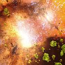
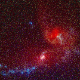
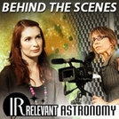

|  | NASA's Spitzer Finds Violent Galaxies Smothered in 'Crushed Glass' |
| NASA press release: NASA's Spitzer Space Telescope has observed a rare population of colliding galaxies whose entangled hearts are wrapped in tiny crystals resembling crushed glass. | |
| (NASA press release) | |
| Released: February 15, 2006 | |
|  | Finding crystals in Colliding Galaxies |
| Robert Hurt interviews Dr. Henrik Spoon about a first in extragalactic astronomy: the detection of delicate crystals on dust grains in the violent centers of colliding galaxies. | |
| (Running Time: 6:11) | |
| Released: February 15, 2006 | |
|  | Behind the Scenes: When Galaxies Collide |
| Felicia Day explains some of the science behind galactic "collisions," including the upcoming collision between the galaxy Andromeda and our own galaxy, in this mock behind-the-scenes look at the making of an educational video. Sean Astin also stars. | |
| (Running Time: 10:00) | |
| Released: October 26, 2009 |